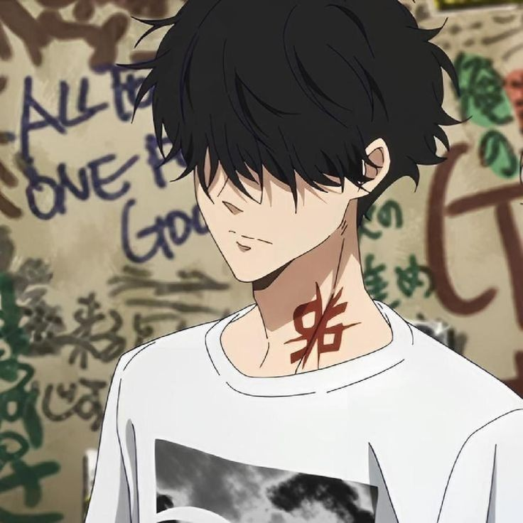

Tentang Saya
Ron Kamonohashi (鴨乃橋かものはしロン, Kamonohashi Ron) is a talented detective and the student with the highest grades in BLUE's history. As his detective license was revoked after an incident five years ago, he has partnered up with Totomaru Isshiki to still be able to solve cases.
cerita
cerita 1
The series focuses on the adventures of Ron Kamonohashi, an eccentric private detective, and Totomaru Isshiki, an unskilled police officer, as they solve crimes together.[3] Five years ago, Ron was the top student at the Detective Training Academy Blue.
cerita 2
However, after being found responsible via temporary insanity for a deadly incident known as the "Bloody Field Trip", his detective license was revoked and he was expelled. Unable to fulfill his only love of solving mysteries, Ron has lived in isolation since. When Totomaru seeks his help on a case, the two form a partnership where Totomaru takes the credit for the cases that Ron solves.